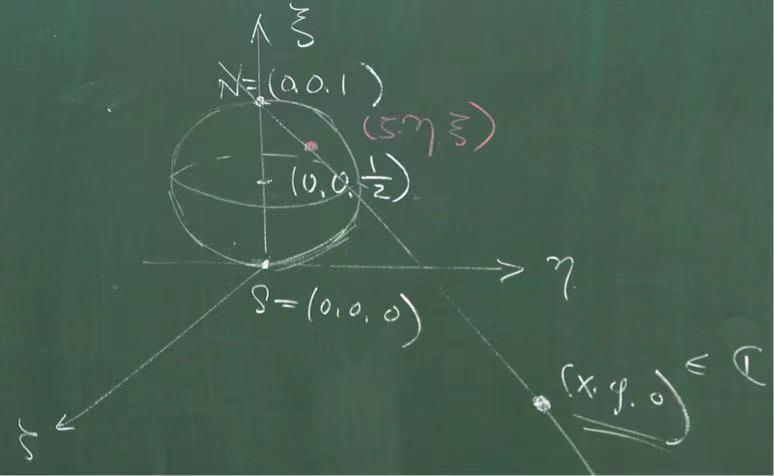

奇異點
Singular point 奇異點
- \(\exists M>0, |f(z)|\leqslant M, \forall z\in D/\{z_0\}\) （removeable singularity）
- \(\displaystyle \lim_{z\rightarrow z_0}|f(z)|=+\infty\) （pole 極點）
- \(f\) is not bounded on \(D/\{z_0\}\) and \(\displaystyle \lim_{z\rightarrow z_0}|f(z)|\neq +\infty\) （esential singularity 本質奇異點）最複雜
Theo (Mean value theorem)
\(D\subset \mathbb{C}\) domain, \(f\in O(D)\), let \(p\in D\), then provided that \(\bar{B}(p;r)\subset D\), we have
\[ f(p)=\frac{1}{2\pi}\int_0^{2\pi}f(p+re^{i\theta})d\theta \]
pf.
write \(w=p+re^{i\theta}\)
\[ \begin{aligned} f(p)&=\frac{1}{2\pi i} \int_{C_r}\frac{f(w)}{w-p}dw\\ &=\frac{1}{2\pi i}\int_0^{2\pi}\frac{f(p+re^{i\theta})}{re^{i\theta}}ire^{i\theta}d\theta\\ &=\frac{1}{2\pi}\int_0^{2\pi}f(p+re^{i\theta})d\theta \end{aligned} \]
Theo (Maximum modulus principle)
\(D\subset \mathbb{C}\) domain, \(f\in O(D)\), Then \(|f|\) cannot attain local maximum in \(D\), unless \(f\) is a constant
pf. 如果modulus取到了local maxim，要證明是常數
\(z_0\in D\), i.e. \(\exists R>0, s.t.\ B(z_0;R)\subset D\) and \[ |f(z_0)|\geqslant |f(z)| \quad \forall z_0\in B(z_0;R) \]
let \(0<r<R\)
\[ \begin{aligned} |f(z_0)|=|\frac{1}{2\pi}\int_0^{2\pi}f(p+re^{i\theta})d\theta|&\leqslant \frac{1}{2\pi}\int_0^{2\pi}|f(p+re^{i\theta})|d\theta \\ &\leqslant \frac{1}{2\pi}\int_0^{2\pi}|f(z_0)|d\theta=|f(z_0)| \end{aligned} \]
因為\(|f(z_0)|=|f(z_0)|\)，不等號全部變成等號，於是強迫
\[ |f(z_0+re^{i\theta})|=|f(z_0)| \quad \forall \theta, \ 0<r<R \]
\[ |f(z)|=const\quad z\in B(z_0;R) \]
\[ \therefore |f(z)|^2=const \]
\[ \therefore \frac{\partial^2}{\partial z\partial \bar{z}}|f(z)|^2=\frac{\partial^2}{\partial z\partial \bar{z}}(f(z)\bar{f}(z))\overset{?}{=}|\frac{\partial f}{\partial z}|^2=0 \]
\(?\) 處，
\[ \therefore f'(z)=0\quad on \ B(z_0;R) \]
\[ f(z)=const\quad on \ B(z_0;R) \]
\[ \therefore f(z)=const\quad on \ D \ (唯一集) \]
Theo
Let \(D\subset\mathbb{C}\) be a bounded domain and \(f\in O(D)\cap C(\bar{D})\) (連續到邊界)
If f is not a constant, then the max of \(|f|\) on \(\bar{D}\) must occur at some boundary point
最大值不可能在裡面，否則就由最大模定理變成常數函數。
Extended complex plane
對\(\mathbb{C}\)進行one point compactification（一點緊緻化）
\(\mathbb{C}_{\infty}=\mathbb{C}\cup \{\infty\}\)
先給它一個拓撲
open sets:
- contains all of the open sets of \(\mathbb{C}\)
- 加一個open set \(U\) s.t. \(\infty\in U\) and \(\mathbb{C}\verb|\| U\) is a compact subset of \(\mathbb{C}\)
\(\mathbb{C}_{\infty}:\) compact complex manifold（複流型），是一維的
其實就是\(\mathbb{CP}^1\)，Complex dim=1 complex projective space（一維的複投影空間）
Riemann sphere \(S^2\)

steoreographic projection 立體投影
\[ 解析同構：\mathbb{C}_{\infty}\simeq \mathbb{CP}^1\simeq S^2 \]
處理奇異點
第一類
removable singularity可以重新定義，讓它變成解析函數
Riemann's theorem on removable singularity
\(D\subset \mathbb{C}\), domain, \(z_0\in D\), \(f\in O(D)\verb|\|\{z_0\}\) and \(|f|\) is bounded on \(D\verb|\|\{z_0\}\)
Then \(f\) can be redefined at \(z_0\) s.t, the function still denoted by \(f\) is holoporphic in \(D\) i.e. \(f\in O(D)\)
pf. Consider
\[ g(z)=(z-z_0)^2f(z)\quad z\in D\verb|\| \{z_0\}\quad \star \]
\[ g(z_0)=0\quad \therefore g\in C(D) \]
\[ \lim_{z\rightarrow z_0} =\frac{g(z)-g(z_0)}{z-z_0} =\lim_{z\rightarrow z_0}\frac{(z-z_0)^2f(z)}{z-z_0} =\lim_{z\rightarrow z_0}(z-z_0)f(z)=0 \]
\(g\)每個點都可以微分
\[ \therefore g\in O(D) \]
\[ \therefore g(z) =\sum_{k=2}^{\infty}a_k(z-z_0)^k =(z-z_0)^2\cdot \sum_{m=0}^{\infty} a_{m+2}(z-z_0)^m=(z-z_0)^2\varphi (z)\quad \star \]
還是解析函數
\(\varphi\in O(D)\)
兩個星號，\(f(z)=\varphi(z)\)
\[ \lim_{z\rightarrow z_0}f(z)=\lim_{z\rightarrow z_0}\varphi(z)=\varphi(z_0) \]
If we redefine f at \(z_0\) to be \(\varphi(z_0)\), then \(f=\varphi\in O(D)\)
再證明 Liouville
Bounded entire function must be constant
除了北極之外有一個有界的解析函數，北極是第一類奇異點（因為周圍都有界），用Riemann的方法處理完
一個連續函數在緊緻的集合上一定有極大值，相對於附近的open set是內點，所以\(|f|\)在一個內點取到極大值。可是由最大模定理，強迫\(f\)在neighborhood上變成常數，再由恆等定理，它在\(\mathbb{C}\)上就是常數函數。
第二類
\(|f(z)|\rightarrow \infty\) as \(z\rightarrow z_0\)
i.e. \(\forall M>0, \ |f(z)|\geqslant M>0,\ when \ z\in B(z_0;\varepsilon)\verb|\| \{z_0\}\)
Consider
\[ g(z)=\frac{1}{f(z)}\quad \therefore g(z)\leqslant \frac{1}{M} \]
表示\(g(z)\)在disk上有界，\(\{z_0\}\)變成\(g(z)\)的第一類奇異點
\[ \lim_{z\rightarrow z_0}g(z)=0 \]
由Riemann把\(g(z_0)\)定義為0，變成解析函數
\[ \therefore g(z)=\sum_{k=k_0}^{\infty}a_k(z-z_0)^k =(z-z_0)^{k_0}\cdot \underbrace{\sum_{m=0}^{\infty}a_{k_0+m}(z-z_0)^m}_{\varphi(z)} \]
\(k_0:\) smallest index s.t. \(a_{k_0}\neq 0\)；由定義的，\(常數項=0\)
\(\varphi\in O(B(z_0;\delta))\)，\(\varphi(z_0)=a_{k_0}\neq 0\)
\[ g(z)=\frac{1}{f(z)}=(z-z_0)^{k_0}\varphi(z)\quad \varphi(z_0)\neq 0 \]
On \(z\in B(z_0;\delta)\verb|\|\{z_0\}\)
\[ \begin{aligned} f(z)&=\frac{1}{(z-z_0)^{k_0}\varphi(z)}=\frac{1}{(z-z_0)^k}h(z)\\ &=\frac{1}{(z-z_0)^k}\underbrace{\left(c_0+c_1(z-z_0)+c_2(z-z_0)^2+\cdots \right)}_{h(z)} \end{aligned} \]
\[ \begin{aligned} \therefore f(z)=&\overbrace{\frac{c_0}{(z-z_0)^{k_0}}+\frac{c_1}{(z-z_0)^{k_0-1}}+\cdots+\frac{c_{k_0-1}}{z-z_0}}^{I_{z_0}}\\ &\qquad +\underbrace{c_{k_0}+c_{k_0+1}(z-z_0)+\cdots+c_{k_0+m}(z-z_0)^m+\cdots}_{h_{z_0}} \end{aligned} \]
\[ f(z)=I_{z_0}+h_{z_0} \]
\(I_{z_0}:\) singular part
\(h_{z_0}:\) holomorphic part
\(k_0\) is called the order of the pole, \(k_0=1\) we call it simple pole
亞純函數：A function is called a meromorphic function if \(f\) is holomorphic except for poles.
第三類
Essential singular point 本質奇異點
e.g. \(f(z)=e^z\) misses \(0\) only e.g. \(f(z)=z\) doesn't miss
Theo (Casorati-Weierstrass)
Let \(z_0\) be an essential singularity of \(f\). Let \(U\) be an open neighborhood of \(z_0\), s.t. \(f\in O(U\verb|\|\{z_0\})\)
Then \(f(U\verb|\|\{z_0\})\) is dense in \(\mathbb{C}\).
pf.
If not. i.e. \(\overline{f(U\verb|\|\{z_0\})}\neq \mathbb{C}\)
\(\mathbb{C}\verb|\|f(U\verb|\|\{z_0\})\) contains \(B(p;\delta), \delta>0\)
Consider
\[ g(z)=\frac{1}{f(z)-p}\quad z\in U\verb|\|\{z_0\} \]
\[ |g(z)|=\frac{1}{|f(z)-p|}\leqslant \frac{1}{\delta} \]
\(\therefore z_0\) is a removable singularity of \(g\)
\[ \therefore \lim_{z\rightarrow z_0}g(z)=L \quad \exists L \]
- \(L=0\)
\[ \therefore \lim_{z\rightarrow z_0}|f(z)|=\infty \Rightarrow z_0\text{ is a pole} \]
- \(L\neq 0\)
\[ \frac{1}{\displaystyle\lim_{z\rightarrow z_0}f(z)-p}=L\neq 0\Rightarrow \lim_{z\rightarrow z_0}=p+\frac{1}{L}\quad \text{removable} \]
矛盾. \(\blacksquare\)
Picard's great thoerem
Same hypothesis as Casorati-Weierstrass
Then \(f(U\verb|\|\{z_0\})\) misses at most one point
e.g. \(f(z)=e^{1/z}\) misses only 0
Picard's little theorem
Let \(f\in O(\mathbb{C})\). If \(f(\mathbb{C})\) misses two points then \(f\) is a constant function
回想Liouville，說有界的entire function是常數函數。皮卡小定理則證明出只要整函數miss兩個點就變成常數函數，厲害很多